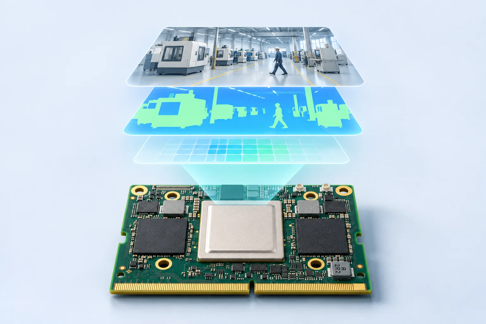

Choose a model and download it.
Compare available model variants and benchmarks, then download supported models with one CLI command. Open the Model Browser
RELEASE NOTES / PREVIEW
Neat 0.6.2 Model Compiler 3.0.0.2
Run Modalix examples with fewer setup steps, build vision pipelines that can label individual pixels, and retry mixed-precision compilations affected by the W8A16 fix.

NEAT APPS
Most examples now point to models compiled for Modalix in the Model Browser.
Compare available model variants and benchmarks, then download supported models with one CLI command. Open the Model Browser
Explore RF-DETR detection and segmentation, YOLO26 oriented-box detection, and a new face recognition example. See the Apps changes
NEAT LIBRARY
Neat 0.6.2 expands segmentation and gives developers more control over how inputs are prepared for a model.
Generate a class label for each pixel with supported semantic segmentation models, or return masks at the original image size with supported Segment Anything models. Semantic segmentation requires firmware with the EV74 ResizeArgMax operation.
Use center cropping, top-left letterboxing or antialiased resizing where supported. Compatible detection decoders can map boxes back to the original image. Read the Neat Library release notes
MODEL COMPILER 3.0.0.2
Model Compiler 3.0.0.2 fixes an issue that caused some compilations with INT8 weights and BF16 activations (W8A16) to fail.
SIMA-CLI 2.1.22
Search the Model Browser catalog and download a compiled variant from the same terminal where you run your Modalix example. Both commands use the main catalog by default.
List available models.
sima-cli models listOr narrow the list to YOLO26m.
sima-cli models list --query yolo26mDownload the YOLO26m W8A8 package into the default models/ directory.
sima-cli models download --id yolo26m --variant w8a8sima-cli 2.1.22 also improves DevKit recovery. NetBoot keeps waiting while firmware downloads, and device sign-in shows its link and code in scripts and containers.
Read the sima-cli release notesUPGRADE GUIDE
Palette SDK 3.0.0.2 targets the eLxr Platform 3.0.1 sysroot. Plan a rebuild when moving applications from Neat 0.6.0 or 0.6.1.
Read the migration detailsBEFORE UPGRADING
These commands install the latest official firmware. Choose either method and confirm that the updater offers Platform 3.0.1 before proceeding.
On the DevKit
Connect the DevKit to the internet before running the command.
sima-cli updateFrom your host
Make sure your host can reach the DevKit. Replace <devkit-ip> with the DevKit’s IP address.
sima-cli update --ip <devkit-ip>Follow the prompts to finish the update. Read the firmware update guide
Rebuild C++ applications, plugins, and Python bindings built against ABI 6 with the 0.6.2 headers and matching runtime packages.
PREVIOUS RELEASE